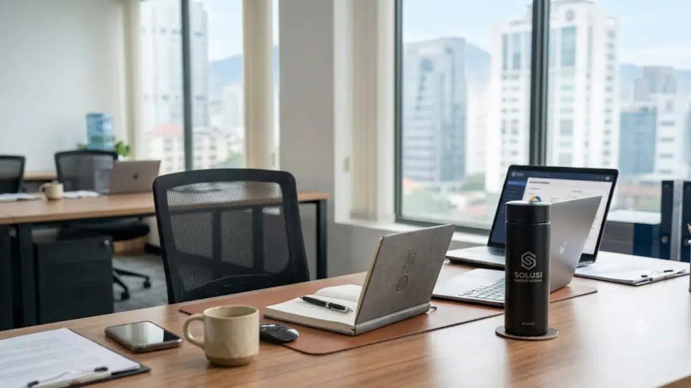
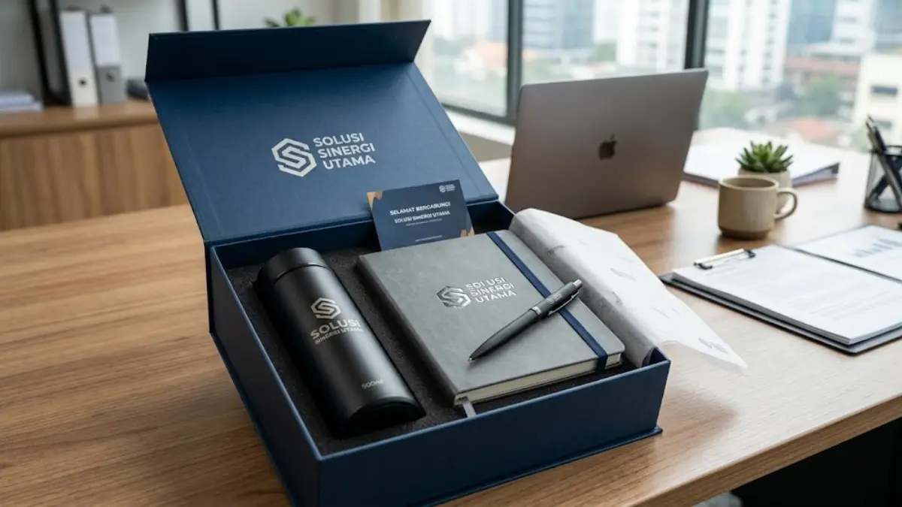

Set Souvenir Kantor Custom (Tumbler, Notebook, dan Pulpen)
 Anggun Tri Stya Ningrum (Tri)
31 Juli 2026
6 Menit Baca
Anggun Tri Stya Ningrum (Tri)
31 Juli 2026
6 Menit Baca

Set souvenir kantor custom tumbler, notebook, dan pulpen adalah paket merchandise berlogo perusahaan yang menggabungkan tiga produk fungsional dalam satu kemasan untuk hadiah karyawan maupun klien. Kombinasi tiga produk ini populer karena mencakup kebutuhan minum, mencatat, dan menulis sehari-hari di kantor. Packaging yang rapi turut menentukan kesan premium set souvenir saat diterima penerima.
Set souvenir kantor custom tumbler, notebook, dan pulpen adalah paket merchandise berlogo perusahaan yang menggabungkan tiga produk fungsional dalam satu kemasan untuk hadiah karyawan maupun klien. Set ini menggabungkan tumbler, notebook, dan pulpen custom dalam satu paket kemasan yang siap diberikan. Kombinasi tiga produk ini populer karena mencakup kebutuhan minum, mencatat, dan menulis sehari-hari di kantor. Spesifikasi tumbler sebaiknya disesuaikan dengan kapasitas dan bahan yang tahan lama untuk pemakaian harian. Notebook custom sebaiknya memiliki cover yang kokoh agar logo perusahaan tercetak rapi dan awet. Packaging yang rapi turut menentukan kesan premium set souvenir saat diterima penerima.
- Apa Itu Set Souvenir Kantor Custom Tumbler, Notebook, dan Pulpen?
- Kenapa Kombinasi Tumbler, Notebook, dan Pulpen Menjadi Favorit Perusahaan?
- Bagaimana Spesifikasi Ideal untuk Tumbler Custom Kantor?
- Apa Kelebihan Notebook Custom sebagai Bagian dari Set Souvenir?
- Bagaimana Memilih Pulpen Custom yang Tepat untuk Melengkapi Set?
- Bagaimana Cara Packaging Set Souvenir agar Tampil Premium?
- Kapan Waktu yang Tepat Memberikan Set Souvenir Ini kepada Karyawan atau Klien?
- Kesimpulan
- FAQ
Apa Itu Set Souvenir Kantor Custom Tumbler, Notebook, dan Pulpen?
Set souvenir kantor custom tumbler, notebook, dan pulpen adalah paket merchandise yang terdiri atas tiga produk fungsional, yaitu wadah minum, buku catatan, dan alat tulis, yang seluruhnya dicetak dengan logo dan identitas visual perusahaan. Ketiga produk ini biasanya dikemas bersama dalam satu box atau pouch agar terlihat sebagai satu kesatuan hadiah yang utuh.
Set ini umumnya dipakai perusahaan sebagai welcome kit untuk karyawan baru, hadiah ulang tahun perusahaan, maupun souvenir untuk peserta seminar dan pelatihan internal. Kombinasi tiga produk dalam satu set memudahkan perusahaan menyampaikan kesan profesional sekaligus fungsional kepada penerima, dibandingkan memberikan satu produk tunggal saja.

Kenapa Kombinasi Tumbler, Notebook, dan Pulpen Menjadi Favorit Perusahaan?
Kombinasi tumbler, notebook, dan pulpen menjadi favorit karena ketiganya termasuk kebutuhan dasar yang dipakai hampir setiap hari di lingkungan kerja, baik oleh karyawan kantor maupun peserta acara korporat.
Tumbler mewakili kebutuhan minum yang mendukung gaya hidup lebih sehat sekaligus mengurangi penggunaan gelas atau botol plastik sekali pakai di kantor. Notebook mewakili kebutuhan mencatat, baik untuk rapat, brainstorming, maupun pencatatan tugas harian, sehingga produk ini sering digunakan langsung di meja kerja. Pulpen sebagai pelengkap notebook membuat set ini terasa lengkap dan siap pakai tanpa penerima perlu menyiapkan alat tulis tambahan.
Selain aspek fungsional, kombinasi tiga produk ini juga memberikan lebih banyak ruang bagi perusahaan untuk menampilkan logo secara konsisten pada beberapa titik sentuh berbeda, sehingga memperkuat brand recall dibandingkan hanya mengandalkan satu produk saja.
Bagaimana Spesifikasi Ideal untuk Tumbler Custom Kantor?
Tumbler custom kantor idealnya menggunakan bahan stainless steel dengan kapasitas sekitar 350 hingga 500 mililiter, karena ukuran ini dianggap cukup untuk kebutuhan minum harian tanpa terlalu berat dibawa.
Fitur double wall insulation juga umum dipilih agar tumbler mampu menjaga suhu minuman lebih lama, baik untuk minuman panas maupun dingin. Dari sisi finishing, tumbler dengan permukaan matte atau powder coating cenderung lebih tahan gores dan memberikan tampilan yang lebih premium dibandingkan permukaan glossy biasa.
Untuk pencetakan logo, teknik laser engraving umumnya menghasilkan tampilan logo yang lebih tahan lama pada tumbler dibandingkan sablon biasa, meskipun biaya produksinya dapat bervariasi tergantung vendor. Warna tumbler sebaiknya disesuaikan dengan warna identitas brand perusahaan agar set souvenir terlihat konsisten secara keseluruhan.
Apa Kelebihan Notebook Custom sebagai Bagian dari Set Souvenir?
Notebook custom memberikan kelebihan berupa ruang cetak yang cukup luas untuk menampilkan logo, tagline, atau elemen visual brand secara lebih detail dibandingkan produk lain dalam satu set.
Notebook dengan cover hardcover umumnya lebih disukai karena memberikan kesan lebih kokoh dan tahan lama dibandingkan cover softcover biasa. Beberapa perusahaan juga menambahkan elemen tambahan seperti pembatas buku custom, elastic band penutup, atau saku dalam untuk menyimpan kartu nama, guna meningkatkan nilai fungsional notebook tersebut.
Dari sisi konten halaman, notebook dengan kombinasi halaman polos dan halaman bergaris memberikan fleksibilitas lebih bagi penerima untuk mencatat maupun membuat sketsa sederhana selama rapat atau pelatihan kerja.
Bagaimana Memilih Pulpen Custom yang Tepat untuk Melengkapi Set?
Pulpen custom yang tepat untuk melengkapi set souvenir sebaiknya memiliki desain simpel namun tetap menonjolkan logo perusahaan pada bagian badan pulpen yang mudah terlihat.
Pulpen berbahan metal umumnya memberikan kesan lebih premium dibandingkan pulpen plastik, sehingga lebih cocok untuk souvenir yang ditujukan kepada klien atau tamu penting perusahaan. Untuk kebutuhan internal karyawan dengan anggaran lebih terbatas, pulpen plastik berkualitas dengan tinta yang lancar tetap menjadi pilihan yang efisien tanpa mengurangi fungsi utamanya.
Pemilihan warna pulpen sebaiknya senada dengan tumbler dan notebook dalam satu set, agar keseluruhan paket souvenir terlihat rapi dan mencerminkan identitas visual brand secara konsisten.
Bagaimana Cara Packaging Set Souvenir agar Tampil Premium?
Packaging set souvenir sebaiknya menggunakan box dengan desain yang mencerminkan identitas brand perusahaan, baik dari sisi warna, logo, maupun jenis material kemasan yang digunakan.
Box rigid dengan finishing doff umumnya memberikan kesan lebih premium dibandingkan kemasan karton tipis biasa, terutama jika set souvenir ditujukan untuk klien atau acara formal perusahaan. Penataan produk di dalam box juga perlu diperhatikan, misalnya menggunakan sekat khusus agar tumbler, notebook, dan pulpen tidak mudah bergeser saat pengiriman.
Penambahan elemen kecil seperti kartu ucapan custom atau pita sederhana pada kemasan dapat memberikan sentuhan personal tambahan, terutama untuk souvenir yang diberikan pada momen khusus seperti hari jadi perusahaan atau penghargaan karyawan.
Kapan Waktu yang Tepat Memberikan Set Souvenir Ini kepada Karyawan atau Klien?
Set souvenir kantor custom tumbler, notebook, dan pulpen paling sering diberikan pada momen onboarding karyawan baru, perayaan hari jadi perusahaan, maupun sebagai apresiasi setelah pencapaian target kerja tertentu.
Untuk karyawan baru, set ini berfungsi sebagai welcome kit yang membantu mereka merasa lebih diterima sekaligus langsung memiliki perlengkapan kerja dasar sejak hari pertama. Pada acara hari jadi perusahaan, set souvenir sering dibagikan kepada seluruh karyawan sebagai bentuk apresiasi atas kontribusi mereka sepanjang tahun berjalan.
Set ini juga kerap digunakan sebagai souvenir untuk klien atau mitra bisnis, misalnya setelah penandatanganan kerja sama atau sebagai hadiah akhir tahun, karena kombinasi tumbler, notebook, dan pulpen dianggap cukup formal namun tetap terasa personal dibandingkan hadiah generik lainnya.
Butuh Set Souvenir Kantor Custom untuk Perusahaan Anda?
Konsultasikan kebutuhan set souvenir kantor custom tumbler, notebook, dan pulpen dengan tim kami untuk mendapatkan rekomendasi produk dan solusi terbaik.
Konsultasi SekarangKesimpulan
Set souvenir kantor custom tumbler, notebook, dan pulpen menjadi pilihan efektif karena menggabungkan tiga kebutuhan dasar kerja dalam satu paket yang fungsional dan konsisten secara branding. Perusahaan disarankan memperhatikan spesifikasi bahan, konsistensi warna antar produk, serta kualitas packaging agar set souvenir memberikan kesan premium saat diterima karyawan maupun klien. Dengan perencanaan yang matang, set souvenir ini dapat menjadi media branding yang efektif sekaligus apresiasi yang berkesan bagi penerima.
FAQ Seputar Set Souvenir Kantor Custom